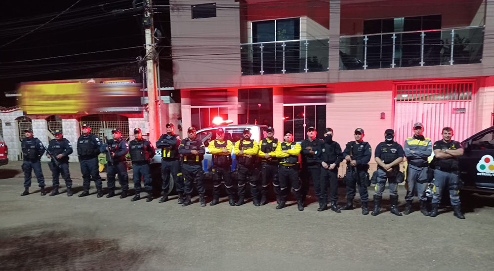

Dark Day
Atenção! Os acontecimentos foram reais, todavia, nomes de pessoas e de lugares poderão ser alterados para a preservação e sigilo de determinadas informações.
O dia 14 de Maio de 2022 entraria para a história da cidade de Nowhere, cidade do interior, no qual ocorreu o massacre, Como membro operacional do SUSP, tive minha primeira experiência extraordinária trabalhando na GCM. O dia começou nublado e silencioso, olhando para trás, faz parecer que esses detalhes intricados eram apenas um presságio do armageddon.
Desde cedo, fui escalado para ser patrulheiro na ronda ostensiva junto ao Inspetor Chefe Mr. Duck, sendo ele o mais antigo de toda a instituição, o número 1, e eu estava no meu primeiro ano, havia acabado de me formar, sendo o número 3 da minha turma, e o mais novo de toda a instituição.
O dia foi calmo e passífico, e na tarde houve uma convocação para minha equipe fazer um treinamento especial de armamento munição e tiro, com respaldo legal. Quando a noite havia chegado, estávamos em prontidão no QTH da PM, para uma missão entre os Agentes Operacionais do SUSP, o chamado patrulhão estava prestes a começar.
Foi uma noite longa e agitada, com várias fiscalizações, mas as coisas começaram a ficar mais intensas quando começamos a receber denúncias de tentativas de homicídio a cada 15 minutos via rádio. Era meia noite quando ocorreu o sexto crime (consumado), dessa vez estávamos próximo, quando chegamos no local, eu me deparei pela primeira vez com corpos no chão, pessoas que apenas estavam no local errado, na hora errada, acabaram sendo vítimas para levantar uma cortina de fumaça, e ocultar o verdadeiro motivo dos assassinatos em série, dificultando as investigações (isso ficou notório, quando foi puxado o histórico individual de cada vítima).
Ao retornarmos a base, sem termos sucesso na indentificação dos infratores criminais, àquelas imagens ainda estavam em minha mente, por algum motivo, em minha cabeça eu não estava me sentindo mal, mas meu corpo parecia ainda estar no local do crime, não estava nenhum pouco trêmulo, mas estava desconexo do meu racicínio, afetando minha coordenação motora.
Começou a chover e todos foram liberados para o descanço, eu passei um tempo olhando pra chuva caindo, é meu tipo de tempo favorito, então desde aquele dia algo mudou... mas não sei ao certo dizer o que foi.